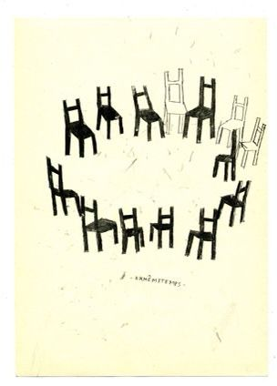

Chairs
What do chairs mean to us?
Life is like a chair. Sometimes it requires adaptation, sometimes persistence, and sometimes change.
1. Adaptation: Chairs are designed to be comfortable for people to sit on. Life is no different. We often need to adapt to the surrounding environment and changes. The curvature of the chair backrest reminds us to learn to withstand pressure, because no chair is completely flat.
2. Persistence: The four legs of the chair symbolize stability. In life, we should learn to be like chairs, rooted in our beliefs and goals. Even in the face of difficulties, one must not let their "legs" bend.
3. Change: The design of the chair can be adjusted as needed. When facing the challenges of life, we also need to adjust our attitudes and actions flexibly, just like adjusting a chair.
Life is like a chair, with ups and downs, partings and reunions. But as long as we can adapt, persist and change in a timely manner, we can find our own comfort zone.
The Birth of the chair

The simple definition of a chair as a movable seat, with a back, for a single person gives no indication of the truly vast range of objects that qualify under this description.
Furthermore, few people today are aware of the fact that for much of its history — and chairs go back through classical times to the time of the pharaohs — the chair was reserved for kings, lords, and bishops; ordinary folk sat on backless chests, benches, or stools.
The word chair derives from the Latin cathedra, hence the designation of a church that was the seat of a bishop as a cathedral. Medieval chairs, religious or secular, were large framed affairs often with linenfold panels, and frequently provided with a canopy or tester, typically placed on a dais to further emphasize the importance of the occupant.
The concept of gathering
The circular arrangement of the chairs implies the possibility of equality, unity and dialogue. This geometric arrangement is the foundation of social interaction, suggesting collectivity and a sense of ritual, while at the same time, the absence of chairs expresses the loneliness of absence.
The empty chair not only symbolizes the individuals who are not present, but also represents a potential form of communication and interaction. They are both like social Spaces waiting for others, and like metaphors for the sense of alienation of modern people.